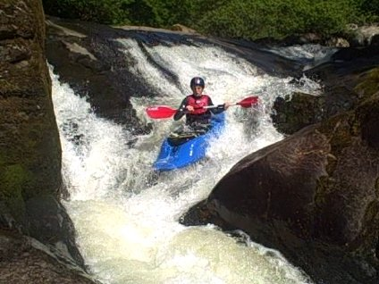
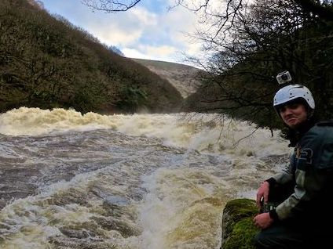

Real-time river level prediction on the Dart river
Why?
Hidden away on forest on Dartmoor, is one of best whitewater rivers in the world. However there is a catch! The river level is usually too low and only after rainfall is it fun to kayak. Even then, it can rise and fall within 6 hours. This website displays real-time river level predictions to help you get that whitewater fix.

Rain makes the difference between this...

...and this
How?
There is an Environmental Agency river level gauge which usually only updates a couple of times a day and a rain gauge high in the catchment that updates every 15 minutes.
Using this information we can predict the river level from the latest EA update to the present and then using the weather forecast from the Met Office make an educated guess about the future!
We use a machine learning model which learns from years of historical data in order to make accurate predictions in the future. For more details see the code here.
Here is an example from April 2019. The model was run at 12:30 on the 5th with the last recorded river level from 12:30 the previous day.
The solid line is recorded river level from the EA gauge.
The darker grey bars are recorded rainfall from the Dartcom gauge in the catchment.
The ligher grey bars are predicted rainfall based on the Metoffice forecast.
The dotted blue line is the predicted river level from the model.